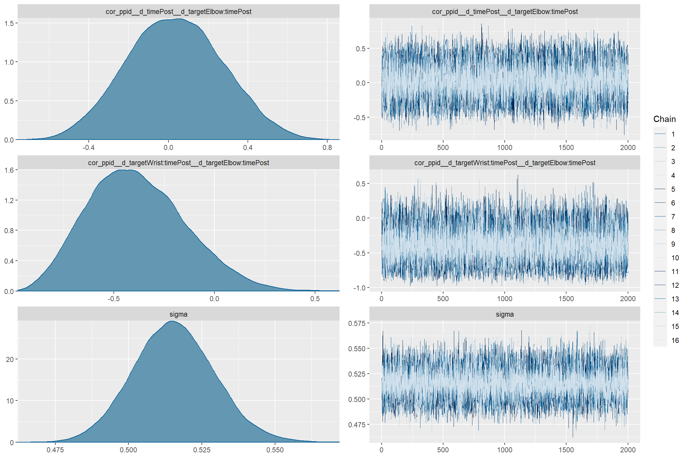

knitr::opts_chunk$set(echo = TRUE,
warning = FALSE,
message = FALSE,
cache = TRUE,
fig.width = 12,
fig.height = 8)
pkgs <- c("dplyr", "readr", "magrittr", "data.table", "here", "brms", "cmdstanr", "bayestestR", "tidybayes", "ggplot2", "flextable", "officer")
for(i in pkgs){
if(!i %in% rownames(installed.packages())){
install.packages(i)
library(i, character.only = TRUE)
}
else(library(i, character.only = TRUE))
}
options("mc.cores" = parallel::detectCores(), "brms.backend" = "cmdstan")
b = 16000/parallel::detectCores()
i = 48000/parallel::detectCores()
ch = parallel::detectCores()
co = parallel::detectCores()Avatar VR - Bayesian Models - Landmark
\(\begin{aligned} error_std &\sim 0 + a + b * time + d \ a &\sim \mathcal{N}(0, 2) \ b &\sim \mathcal{N}(0.2, 2) \ d &\sim \text{Exponential}(1) \ \sigma &\sim \text{Exponential}(1) \ \text{cor}(ppid) &\sim \text{LKJ}(1) \ \end{aligned}\)
landmark <- fread(here::here("data", "study_three", "landmark.csv"))
landmark_summary <- landmark %>% dplyr::select(ppid, trial, time,
forearmlength, target,
error, lapse_fix_target,
lapse_fix_error) %>%
mutate(error_std = datawizard::standardize(error),
forearmlength_std = datawizard::standardize(forearmlength),
lapse_fix_error_std = datawizard::standardize(lapse_fix_error),
lapse_fix_target = factor(
lapse_fix_target,
levels = c("Forearm", "Wrist", "Elbow")),
time = factor(time,
levels = c("pre", "post"),
labels = c("Pre", "Post")),
target = factor(target,
levels = c("Forearm", "Wrist", "Elbow")))
landmark_fix <- landmark_summary %>%
dplyr::select(
ppid, trial, time,
forearmlength_std,
lapse_fix_target,
lapse_fix_error_std
) %>%
mutate(
target = lapse_fix_target,
error_std = lapse_fix_error_std,
)
landmark_summary %>%
group_by(time, target) %>%
dplyr::summarise(
num_lapses = sum(lapse_fix_target != target),
num_trials = n(),
lapse_rate = num_lapses/num_trials
)# A tibble: 6 × 5
# Groups: time [2]
time target num_lapses num_trials lapse_rate
<fct> <fct> <int> <int> <dbl>
1 Pre Forearm 18 138 0.130
2 Pre Wrist 8 138 0.0580
3 Pre Elbow 3 138 0.0217
4 Post Forearm 24 138 0.174
5 Post Wrist 5 138 0.0362
6 Post Elbow 1 138 0.00725Models
In order to have an interaction parameter (and hypothesis test) for all three targets, brms’s nonlinear construction was used. ## Normal ### Prior
landmark_time_target_priors <- brm(
bf(error_std ~ 0 + a + b * time + d,
a ~ 0 + target,
b ~ 0 + target,
d ~ 0 + (0 + target + time + target : time | ppid),
nl = TRUE),
prior = c(prior("normal(0, 2)", nlpar = "a"),
prior("normal(.2, 2)", nlpar = "b"),
#prior("normal(0, .5)", nlpar = "c"),
prior("exponential(1)", class = "sd", nlpar = "d"),
prior("exponential(1)", class = "sigma"),
set_prior(prior = "lkj(1)", class = "cor", group = "ppid")),
data = landmark_summary,
sample_prior = "only",
seed = 1337,
silent = TRUE, refresh = 0,
save_pars = save_pars(all = TRUE),
warmup = b,
iter = i,
chains = ch,
cores = co,
control = list(adapt_delta = .975, max_treedepth = 15))Running MCMC with 16 parallel chains...
Chain 5 finished in 2.9 seconds.
Chain 9 finished in 2.9 seconds.
Chain 1 finished in 3.0 seconds.
Chain 2 finished in 3.1 seconds.
Chain 3 finished in 3.0 seconds.
Chain 4 finished in 3.0 seconds.
Chain 6 finished in 3.1 seconds.
Chain 7 finished in 3.0 seconds.
Chain 8 finished in 3.0 seconds.
Chain 10 finished in 3.0 seconds.
Chain 11 finished in 3.0 seconds.
Chain 12 finished in 3.0 seconds.
Chain 13 finished in 3.0 seconds.
Chain 14 finished in 3.0 seconds.
Chain 15 finished in 3.0 seconds.
Chain 16 finished in 3.0 seconds.
All 16 chains finished successfully.
Mean chain execution time: 3.0 seconds.
Total execution time: 3.4 seconds.summary(landmark_time_target_priors) Family: gaussian
Links: mu = identity; sigma = identity
Formula: error_std ~ 0 + a + b * time + d
a ~ 0 + target
b ~ 0 + target
d ~ 0 + (0 + target + time + target:time | ppid)
Data: landmark_summary (Number of observations: 828)
Draws: 16 chains, each with iter = 3000; warmup = 1000; thin = 1;
total post-warmup draws = 32000
Group-Level Effects:
~ppid (Number of levels: 23)
Estimate Est.Error l-95% CI
sd(d_targetForearm) 1.00 1.00 0.03
sd(d_targetWrist) 0.99 1.00 0.02
sd(d_targetElbow) 1.00 1.00 0.02
sd(d_timePost) 1.01 1.00 0.03
sd(d_targetWrist:timePost) 1.00 0.99 0.02
sd(d_targetElbow:timePost) 1.00 1.00 0.02
cor(d_targetForearm,d_targetWrist) -0.00 0.38 -0.71
cor(d_targetForearm,d_targetElbow) -0.00 0.38 -0.71
cor(d_targetWrist,d_targetElbow) -0.00 0.38 -0.71
cor(d_targetForearm,d_timePost) 0.00 0.38 -0.71
cor(d_targetWrist,d_timePost) 0.00 0.38 -0.72
cor(d_targetElbow,d_timePost) -0.00 0.38 -0.71
cor(d_targetForearm,d_targetWrist:timePost) -0.00 0.38 -0.71
cor(d_targetWrist,d_targetWrist:timePost) -0.00 0.38 -0.71
cor(d_targetElbow,d_targetWrist:timePost) 0.00 0.38 -0.70
cor(d_timePost,d_targetWrist:timePost) 0.00 0.38 -0.71
cor(d_targetForearm,d_targetElbow:timePost) -0.00 0.38 -0.70
cor(d_targetWrist,d_targetElbow:timePost) -0.00 0.38 -0.71
cor(d_targetElbow,d_targetElbow:timePost) -0.00 0.38 -0.71
cor(d_timePost,d_targetElbow:timePost) -0.00 0.38 -0.70
cor(d_targetWrist:timePost,d_targetElbow:timePost) 0.00 0.38 -0.71
u-95% CI Rhat Bulk_ESS
sd(d_targetForearm) 3.68 1.00 41491
sd(d_targetWrist) 3.66 1.00 43961
sd(d_targetElbow) 3.66 1.00 40617
sd(d_timePost) 3.69 1.00 44505
sd(d_targetWrist:timePost) 3.70 1.00 44586
sd(d_targetElbow:timePost) 3.63 1.00 45365
cor(d_targetForearm,d_targetWrist) 0.70 1.00 86725
cor(d_targetForearm,d_targetElbow) 0.70 1.00 87850
cor(d_targetWrist,d_targetElbow) 0.72 1.00 45161
cor(d_targetForearm,d_timePost) 0.71 1.00 92130
cor(d_targetWrist,d_timePost) 0.71 1.00 42784
cor(d_targetElbow,d_timePost) 0.71 1.00 29442
cor(d_targetForearm,d_targetWrist:timePost) 0.71 1.00 89286
cor(d_targetWrist,d_targetWrist:timePost) 0.70 1.00 47314
cor(d_targetElbow,d_targetWrist:timePost) 0.71 1.00 29313
cor(d_timePost,d_targetWrist:timePost) 0.71 1.00 23091
cor(d_targetForearm,d_targetElbow:timePost) 0.70 1.00 83426
cor(d_targetWrist,d_targetElbow:timePost) 0.70 1.00 45724
cor(d_targetElbow,d_targetElbow:timePost) 0.71 1.00 29852
cor(d_timePost,d_targetElbow:timePost) 0.71 1.00 22631
cor(d_targetWrist:timePost,d_targetElbow:timePost) 0.71 1.00 19923
Tail_ESS
sd(d_targetForearm) 17821
sd(d_targetWrist) 17631
sd(d_targetElbow) 16545
sd(d_timePost) 19420
sd(d_targetWrist:timePost) 18024
sd(d_targetElbow:timePost) 17753
cor(d_targetForearm,d_targetWrist) 20226
cor(d_targetForearm,d_targetElbow) 20530
cor(d_targetWrist,d_targetElbow) 21432
cor(d_targetForearm,d_timePost) 20763
cor(d_targetWrist,d_timePost) 22061
cor(d_targetElbow,d_timePost) 22932
cor(d_targetForearm,d_targetWrist:timePost) 19876
cor(d_targetWrist,d_targetWrist:timePost) 21507
cor(d_targetElbow,d_targetWrist:timePost) 22790
cor(d_timePost,d_targetWrist:timePost) 23822
cor(d_targetForearm,d_targetElbow:timePost) 19288
cor(d_targetWrist,d_targetElbow:timePost) 21861
cor(d_targetElbow,d_targetElbow:timePost) 22216
cor(d_timePost,d_targetElbow:timePost) 23715
cor(d_targetWrist:timePost,d_targetElbow:timePost) 23059
Population-Level Effects:
Estimate Est.Error l-95% CI u-95% CI Rhat Bulk_ESS Tail_ESS
a_targetForearm 0.02 2.01 -3.93 3.94 1.00 90798 22459
a_targetWrist 0.00 1.98 -3.89 3.88 1.00 93598 22307
a_targetElbow 0.01 1.99 -3.93 3.93 1.00 91672 21400
b_targetForearm 0.20 2.00 -3.73 4.12 1.00 89766 20461
b_targetWrist 0.20 2.01 -3.72 4.13 1.00 93402 21817
b_targetElbow 0.20 2.00 -3.74 4.14 1.00 86279 21849
Family Specific Parameters:
Estimate Est.Error l-95% CI u-95% CI Rhat Bulk_ESS Tail_ESS
sigma 0.99 1.01 0.02 3.71 1.00 42441 17358
Draws were sampled using sample(hmc). For each parameter, Bulk_ESS
and Tail_ESS are effective sample size measures, and Rhat is the potential
scale reduction factor on split chains (at convergence, Rhat = 1).plot(landmark_time_target_priors)Posterior
landmark_time_target <- update(
landmark_time_target_priors,
sample_prior = "no",
refresh = 0,
seed = 1337,
file = here::here("scripts", "for_osf", "tooluse_avatar", "models", "landmark_error_time_target.rds"),
file_refit = "on_change",
silent = TRUE
)Running MCMC with 16 parallel chains...
Chain 1 finished in 73.3 seconds.
Chain 6 finished in 80.4 seconds.
Chain 5 finished in 82.0 seconds.
Chain 8 finished in 82.3 seconds.
Chain 2 finished in 82.9 seconds.
Chain 10 finished in 83.5 seconds.
Chain 7 finished in 83.6 seconds.
Chain 12 finished in 83.6 seconds.
Chain 16 finished in 84.0 seconds.
Chain 11 finished in 84.4 seconds.
Chain 15 finished in 84.5 seconds.
Chain 3 finished in 85.0 seconds.
Chain 9 finished in 85.0 seconds.
Chain 4 finished in 85.3 seconds.
Chain 14 finished in 86.0 seconds.
Chain 13 finished in 86.3 seconds.
All 16 chains finished successfully.
Mean chain execution time: 83.2 seconds.
Total execution time: 86.6 seconds.summary(landmark_time_target) Family: gaussian
Links: mu = identity; sigma = identity
Formula: error_std ~ 0 + a + b * time + d
a ~ 0 + target
b ~ 0 + target
d ~ 0 + (0 + target + time + target:time | ppid)
Data: landmark_summary (Number of observations: 828)
Draws: 16 chains, each with iter = 3000; warmup = 1000; thin = 1;
total post-warmup draws = 32000
Group-Level Effects:
~ppid (Number of levels: 23)
Estimate Est.Error l-95% CI
sd(d_targetForearm) 0.78 0.12 0.59
sd(d_targetWrist) 0.72 0.11 0.53
sd(d_targetElbow) 1.00 0.15 0.76
sd(d_timePost) 0.56 0.11 0.38
sd(d_targetWrist:timePost) 0.49 0.13 0.26
sd(d_targetElbow:timePost) 0.57 0.14 0.33
cor(d_targetForearm,d_targetWrist) 0.71 0.11 0.46
cor(d_targetForearm,d_targetElbow) 0.61 0.13 0.31
cor(d_targetWrist,d_targetElbow) 0.27 0.17 -0.10
cor(d_targetForearm,d_timePost) -0.01 0.20 -0.38
cor(d_targetWrist,d_timePost) 0.37 0.18 -0.02
cor(d_targetElbow,d_timePost) -0.31 0.18 -0.63
cor(d_targetForearm,d_targetWrist:timePost) 0.13 0.22 -0.31
cor(d_targetWrist,d_targetWrist:timePost) -0.30 0.21 -0.67
cor(d_targetElbow,d_targetWrist:timePost) 0.29 0.21 -0.15
cor(d_timePost,d_targetWrist:timePost) -0.49 0.20 -0.81
cor(d_targetForearm,d_targetElbow:timePost) -0.11 0.22 -0.53
cor(d_targetWrist,d_targetElbow:timePost) -0.15 0.21 -0.55
cor(d_targetElbow,d_targetElbow:timePost) -0.46 0.18 -0.77
cor(d_timePost,d_targetElbow:timePost) 0.03 0.24 -0.42
cor(d_targetWrist:timePost,d_targetElbow:timePost) -0.39 0.24 -0.80
u-95% CI Rhat Bulk_ESS
sd(d_targetForearm) 1.04 1.00 14250
sd(d_targetWrist) 0.97 1.00 15487
sd(d_targetElbow) 1.33 1.00 16825
sd(d_timePost) 0.79 1.00 20392
sd(d_targetWrist:timePost) 0.76 1.00 15491
sd(d_targetElbow:timePost) 0.87 1.00 17856
cor(d_targetForearm,d_targetWrist) 0.88 1.00 16318
cor(d_targetForearm,d_targetElbow) 0.82 1.00 20326
cor(d_targetWrist,d_targetElbow) 0.57 1.00 20158
cor(d_targetForearm,d_timePost) 0.37 1.00 22381
cor(d_targetWrist,d_timePost) 0.69 1.00 25400
cor(d_targetElbow,d_timePost) 0.07 1.00 26794
cor(d_targetForearm,d_targetWrist:timePost) 0.53 1.00 28907
cor(d_targetWrist,d_targetWrist:timePost) 0.14 1.00 32750
cor(d_targetElbow,d_targetWrist:timePost) 0.67 1.00 28781
cor(d_timePost,d_targetWrist:timePost) -0.03 1.00 23517
cor(d_targetForearm,d_targetElbow:timePost) 0.32 1.00 24704
cor(d_targetWrist,d_targetElbow:timePost) 0.28 1.00 28938
cor(d_targetElbow,d_targetElbow:timePost) -0.05 1.00 35344
cor(d_timePost,d_targetElbow:timePost) 0.51 1.00 25288
cor(d_targetWrist:timePost,d_targetElbow:timePost) 0.12 1.00 27880
Tail_ESS
sd(d_targetForearm) 20058
sd(d_targetWrist) 20158
sd(d_targetElbow) 22146
sd(d_timePost) 22587
sd(d_targetWrist:timePost) 17723
sd(d_targetElbow:timePost) 22789
cor(d_targetForearm,d_targetWrist) 22586
cor(d_targetForearm,d_targetElbow) 23035
cor(d_targetWrist,d_targetElbow) 22117
cor(d_targetForearm,d_timePost) 23666
cor(d_targetWrist,d_timePost) 23960
cor(d_targetElbow,d_timePost) 25258
cor(d_targetForearm,d_targetWrist:timePost) 26699
cor(d_targetWrist,d_targetWrist:timePost) 26960
cor(d_targetElbow,d_targetWrist:timePost) 26790
cor(d_timePost,d_targetWrist:timePost) 26266
cor(d_targetForearm,d_targetElbow:timePost) 24506
cor(d_targetWrist,d_targetElbow:timePost) 26650
cor(d_targetElbow,d_targetElbow:timePost) 27903
cor(d_timePost,d_targetElbow:timePost) 26638
cor(d_targetWrist:timePost,d_targetElbow:timePost) 26834
Population-Level Effects:
Estimate Est.Error l-95% CI u-95% CI Rhat Bulk_ESS Tail_ESS
a_targetForearm 0.04 0.17 -0.29 0.38 1.00 7347 12138
a_targetWrist 0.19 0.16 -0.12 0.50 1.00 10399 16719
a_targetElbow -0.17 0.21 -0.59 0.25 1.00 10771 17464
b_targetForearm -0.04 0.13 -0.30 0.22 1.00 17891 20759
b_targetWrist -0.06 0.13 -0.32 0.19 1.00 23547 23226
b_targetElbow -0.01 0.18 -0.37 0.34 1.00 18291 21425
Family Specific Parameters:
Estimate Est.Error l-95% CI u-95% CI Rhat Bulk_ESS Tail_ESS
sigma 0.52 0.01 0.49 0.54 1.00 38409 24507
Draws were sampled using sample(hmc). For each parameter, Bulk_ESS
and Tail_ESS are effective sample size measures, and Rhat is the potential
scale reduction factor on split chains (at convergence, Rhat = 1).plot(landmark_time_target)

pp_check(
landmark_time_target,
type = "dens_overlay_grouped",
ndraws = 50,
group = "target") +
theme_tidybayes() +
theme(
axis.text.y = element_blank()
) +
labs(
title = "Landmark Task Errors",
subtitle = "Posterior Draws vs. Empirical Distribution",
x = "Error (standardized)"
)landmark_describe <- bayestestR::describe_posterior(
landmark_time_target,
centrality = "map",
ci_method="hdi"
) %>% as.data.table()
landmark_describe Parameter MAP CI CI_low CI_high pd ROPE_CI
1: b_a_targetForearm 0.04881017 0.95 -0.294059 0.372671 0.5988438 0.95
2: b_a_targetWrist 0.18411054 0.95 -0.120849 0.498353 0.8919063 0.95
3: b_a_targetElbow -0.18474370 0.95 -0.590957 0.247282 0.7945313 0.95
4: b_b_targetForearm -0.04502278 0.95 -0.310026 0.212027 0.6221875 0.95
5: b_b_targetWrist -0.05765111 0.95 -0.308992 0.195877 0.6984063 0.95
6: b_b_targetElbow -0.01787237 0.95 -0.367130 0.343282 0.5300000 0.95
ROPE_low ROPE_high ROPE_Percentage Rhat ESS
1: -0.1 0.1 0.4651316 1.001531 7294.30
2: -0.1 0.1 0.2575987 1.000884 10377.18
3: -0.1 0.1 0.2800329 1.001556 10737.44
4: -0.1 0.1 0.5653104 1.000689 17786.37
5: -0.1 0.1 0.5458224 1.000341 23286.50
6: -0.1 0.1 0.4532566 1.000837 18126.88landmark_bfs <- landmark_time_target %>%
bayesfactor_pointnull(
direction = ">",
prior = landmark_time_target_priors
) %>%
as.data.table()
(landmark_error_table <- merge(
landmark_bfs[Parameter %in% c(
"b_b_targetElbow",
"b_b_targetWrist",
"b_b_targetForearm"),
.(Parameter = fcase(
Parameter == "b_b_targetElbow", "Elbow",
Parameter == "b_b_targetWrist", "Wrist",
Parameter == "b_b_targetForearm", "Forearm"),
BF = exp(log_BF))],
landmark_describe[
Parameter %in% c(
"b_b_targetElbow",
"b_b_targetWrist",
"b_b_targetForearm"
)][,
Parameter := fcase(
Parameter == "b_b_targetElbow", "Elbow",
Parameter == "b_b_targetWrist", "Wrist",
Parameter == "b_b_targetForearm", "Forearm"
)
],
by = "Parameter"
)
) Parameter BF MAP CI CI_low CI_high pd ROPE_CI
1: Elbow 0.07583538 -0.01787237 0.95 -0.367130 0.343282 0.5300000 0.95
2: Forearm 0.04681090 -0.04502278 0.95 -0.310026 0.212027 0.6221875 0.95
3: Wrist 0.03899160 -0.05765111 0.95 -0.308992 0.195877 0.6984063 0.95
ROPE_low ROPE_high ROPE_Percentage Rhat ESS
1: -0.1 0.1 0.4532566 1.000837 18126.88
2: -0.1 0.1 0.5653104 1.000689 17786.37
3: -0.1 0.1 0.5458224 1.000341 23286.50write_csv(landmark_error_table, file = here::here("scripts", "for_osf", "tooluse_avatar", "tables", "landmark_table.csv"))Lapse Fix
Prior
landmark_lapsefix_error_time_target_priors <- brm(
bf(error_std ~ 0 + a + b * time + d,
a ~ 0 + target,
b ~ 0 + target,
d ~ 0 + (0 + target + time + target : time | ppid),
nl = TRUE),
prior = c(prior("normal(0, 2)", nlpar = "a"),
prior("normal(0, 2)", nlpar = "b"),
prior("exponential(1)", class = "sd", nlpar = "d"),
prior("exponential(1)", class = "sigma")),
data = landmark_fix,
sample_prior = "only",
seed = 1337,
silent = TRUE, refresh = 0,
save_pars = save_pars(all = TRUE),
warmup = b,
iter = i,
chains = ch,
cores = co,
control = list(adapt_delta = .975, max_treedepth = 15))Running MCMC with 16 parallel chains...
Chain 1 finished in 2.5 seconds.
Chain 9 finished in 2.8 seconds.
Chain 2 finished in 3.0 seconds.
Chain 8 finished in 2.9 seconds.
Chain 3 finished in 3.0 seconds.
Chain 4 finished in 3.0 seconds.
Chain 5 finished in 3.0 seconds.
Chain 6 finished in 3.0 seconds.
Chain 7 finished in 3.0 seconds.
Chain 10 finished in 3.0 seconds.
Chain 11 finished in 2.9 seconds.
Chain 12 finished in 3.0 seconds.
Chain 13 finished in 2.9 seconds.
Chain 14 finished in 3.0 seconds.
Chain 15 finished in 3.0 seconds.
Chain 16 finished in 3.0 seconds.
All 16 chains finished successfully.
Mean chain execution time: 2.9 seconds.
Total execution time: 3.3 seconds.summary(landmark_lapsefix_error_time_target_priors) Family: gaussian
Links: mu = identity; sigma = identity
Formula: error_std ~ 0 + a + b * time + d
a ~ 0 + target
b ~ 0 + target
d ~ 0 + (0 + target + time + target:time | ppid)
Data: landmark_fix (Number of observations: 828)
Draws: 16 chains, each with iter = 3000; warmup = 1000; thin = 1;
total post-warmup draws = 32000
Group-Level Effects:
~ppid (Number of levels: 23)
Estimate Est.Error l-95% CI
sd(d_targetForearm) 1.01 1.01 0.02
sd(d_targetWrist) 1.00 0.99 0.03
sd(d_targetElbow) 1.00 1.00 0.02
sd(d_timePost) 1.01 1.00 0.03
sd(d_targetWrist:timePost) 0.99 0.99 0.03
sd(d_targetElbow:timePost) 1.00 1.00 0.02
cor(d_targetForearm,d_targetWrist) -0.00 0.38 -0.71
cor(d_targetForearm,d_targetElbow) -0.00 0.38 -0.71
cor(d_targetWrist,d_targetElbow) 0.00 0.38 -0.71
cor(d_targetForearm,d_timePost) 0.00 0.38 -0.71
cor(d_targetWrist,d_timePost) 0.00 0.38 -0.71
cor(d_targetElbow,d_timePost) 0.00 0.38 -0.70
cor(d_targetForearm,d_targetWrist:timePost) 0.00 0.38 -0.70
cor(d_targetWrist,d_targetWrist:timePost) 0.00 0.38 -0.71
cor(d_targetElbow,d_targetWrist:timePost) -0.00 0.38 -0.71
cor(d_timePost,d_targetWrist:timePost) -0.00 0.38 -0.71
cor(d_targetForearm,d_targetElbow:timePost) -0.00 0.38 -0.71
cor(d_targetWrist,d_targetElbow:timePost) -0.00 0.38 -0.71
cor(d_targetElbow,d_targetElbow:timePost) -0.00 0.38 -0.71
cor(d_timePost,d_targetElbow:timePost) -0.00 0.38 -0.71
cor(d_targetWrist:timePost,d_targetElbow:timePost) -0.00 0.38 -0.71
u-95% CI Rhat Bulk_ESS
sd(d_targetForearm) 3.73 1.00 39509
sd(d_targetWrist) 3.63 1.00 39517
sd(d_targetElbow) 3.70 1.00 36311
sd(d_timePost) 3.67 1.00 39492
sd(d_targetWrist:timePost) 3.68 1.00 41619
sd(d_targetElbow:timePost) 3.67 1.00 41408
cor(d_targetForearm,d_targetWrist) 0.71 1.00 69251
cor(d_targetForearm,d_targetElbow) 0.71 1.00 74475
cor(d_targetWrist,d_targetElbow) 0.72 1.00 42109
cor(d_targetForearm,d_timePost) 0.71 1.00 76681
cor(d_targetWrist,d_timePost) 0.71 1.00 42237
cor(d_targetElbow,d_timePost) 0.72 1.00 27849
cor(d_targetForearm,d_targetWrist:timePost) 0.71 1.00 74841
cor(d_targetWrist,d_targetWrist:timePost) 0.70 1.00 42555
cor(d_targetElbow,d_targetWrist:timePost) 0.70 1.00 27536
cor(d_timePost,d_targetWrist:timePost) 0.70 1.00 22852
cor(d_targetForearm,d_targetElbow:timePost) 0.70 1.00 74858
cor(d_targetWrist,d_targetElbow:timePost) 0.70 1.00 41972
cor(d_targetElbow,d_targetElbow:timePost) 0.70 1.00 29671
cor(d_timePost,d_targetElbow:timePost) 0.71 1.00 20791
cor(d_targetWrist:timePost,d_targetElbow:timePost) 0.70 1.00 20012
Tail_ESS
sd(d_targetForearm) 16883
sd(d_targetWrist) 17172
sd(d_targetElbow) 16315
sd(d_timePost) 18869
sd(d_targetWrist:timePost) 17414
sd(d_targetElbow:timePost) 17568
cor(d_targetForearm,d_targetWrist) 19294
cor(d_targetForearm,d_targetElbow) 20119
cor(d_targetWrist,d_targetElbow) 21431
cor(d_targetForearm,d_timePost) 21127
cor(d_targetWrist,d_timePost) 21607
cor(d_targetElbow,d_timePost) 23041
cor(d_targetForearm,d_targetWrist:timePost) 21374
cor(d_targetWrist,d_targetWrist:timePost) 21161
cor(d_targetElbow,d_targetWrist:timePost) 22959
cor(d_timePost,d_targetWrist:timePost) 24122
cor(d_targetForearm,d_targetElbow:timePost) 20774
cor(d_targetWrist,d_targetElbow:timePost) 21519
cor(d_targetElbow,d_targetElbow:timePost) 22880
cor(d_timePost,d_targetElbow:timePost) 23670
cor(d_targetWrist:timePost,d_targetElbow:timePost) 23313
Population-Level Effects:
Estimate Est.Error l-95% CI u-95% CI Rhat Bulk_ESS Tail_ESS
a_targetForearm 0.01 2.02 -3.94 3.98 1.00 77722 22153
a_targetWrist 0.00 1.99 -3.90 3.90 1.00 75215 22949
a_targetElbow 0.00 2.00 -3.95 3.94 1.00 76378 21678
b_targetForearm -0.00 2.00 -3.94 3.92 1.00 82214 20928
b_targetWrist -0.01 2.02 -3.94 3.93 1.00 74868 22217
b_targetElbow 0.01 2.02 -3.96 3.96 1.00 72871 21490
Family Specific Parameters:
Estimate Est.Error l-95% CI u-95% CI Rhat Bulk_ESS Tail_ESS
sigma 1.00 1.01 0.02 3.73 1.00 39803 16559
Draws were sampled using sample(hmc). For each parameter, Bulk_ESS
and Tail_ESS are effective sample size measures, and Rhat is the potential
scale reduction factor on split chains (at convergence, Rhat = 1).plot(landmark_lapsefix_error_time_target_priors)Posterior
landmark_lapsefix_error_time_target <- update(
landmark_lapsefix_error_time_target_priors,
sample_prior = "no",
refresh = 0,
seed = 1337,
file = here::here("scripts", "for_osf", "tooluse_avatar", "models", "landmark_lapsefix_error_time_target.rds"),
file_refit = "on_change",
silent = TRUE
)Running MCMC with 16 parallel chains...
Chain 5 finished in 80.4 seconds.
Chain 6 finished in 83.4 seconds.
Chain 15 finished in 83.6 seconds.
Chain 11 finished in 84.5 seconds.
Chain 4 finished in 84.8 seconds.
Chain 1 finished in 85.0 seconds.
Chain 12 finished in 85.2 seconds.
Chain 2 finished in 85.7 seconds.
Chain 14 finished in 86.0 seconds.
Chain 10 finished in 86.4 seconds.
Chain 13 finished in 86.6 seconds.
Chain 7 finished in 86.9 seconds.
Chain 9 finished in 87.2 seconds.
Chain 8 finished in 87.3 seconds.
Chain 3 finished in 87.8 seconds.
Chain 16 finished in 88.4 seconds.
All 16 chains finished successfully.
Mean chain execution time: 85.6 seconds.
Total execution time: 88.6 seconds.summary(landmark_lapsefix_error_time_target) Family: gaussian
Links: mu = identity; sigma = identity
Formula: error_std ~ 0 + a + b * time + d
a ~ 0 + target
b ~ 0 + target
d ~ 0 + (0 + target + time + target:time | ppid)
Data: landmark_fix (Number of observations: 828)
Draws: 16 chains, each with iter = 3000; warmup = 1000; thin = 1;
total post-warmup draws = 32000
Group-Level Effects:
~ppid (Number of levels: 23)
Estimate Est.Error l-95% CI
sd(d_targetForearm) 0.66 0.11 0.49
sd(d_targetWrist) 0.72 0.11 0.53
sd(d_targetElbow) 0.99 0.15 0.75
sd(d_timePost) 0.55 0.10 0.37
sd(d_targetWrist:timePost) 0.50 0.13 0.26
sd(d_targetElbow:timePost) 0.58 0.14 0.34
cor(d_targetForearm,d_targetWrist) 0.70 0.12 0.43
cor(d_targetForearm,d_targetElbow) 0.59 0.14 0.28
cor(d_targetWrist,d_targetElbow) 0.15 0.18 -0.22
cor(d_targetForearm,d_timePost) 0.05 0.21 -0.35
cor(d_targetWrist,d_timePost) 0.46 0.17 0.08
cor(d_targetElbow,d_timePost) -0.37 0.18 -0.68
cor(d_targetForearm,d_targetWrist:timePost) 0.16 0.22 -0.29
cor(d_targetWrist,d_targetWrist:timePost) -0.22 0.22 -0.61
cor(d_targetElbow,d_targetWrist:timePost) 0.35 0.21 -0.10
cor(d_timePost,d_targetWrist:timePost) -0.54 0.20 -0.85
cor(d_targetForearm,d_targetElbow:timePost) -0.24 0.23 -0.66
cor(d_targetWrist,d_targetElbow:timePost) -0.22 0.22 -0.61
cor(d_targetElbow,d_targetElbow:timePost) -0.46 0.19 -0.77
cor(d_timePost,d_targetElbow:timePost) 0.12 0.25 -0.36
cor(d_targetWrist:timePost,d_targetElbow:timePost) -0.44 0.24 -0.84
u-95% CI Rhat Bulk_ESS
sd(d_targetForearm) 0.90 1.00 15591
sd(d_targetWrist) 0.98 1.00 16749
sd(d_targetElbow) 1.32 1.00 18029
sd(d_timePost) 0.78 1.00 19211
sd(d_targetWrist:timePost) 0.78 1.00 13664
sd(d_targetElbow:timePost) 0.90 1.00 14879
cor(d_targetForearm,d_targetWrist) 0.87 1.00 17838
cor(d_targetForearm,d_targetElbow) 0.81 1.00 20262
cor(d_targetWrist,d_targetElbow) 0.48 1.00 22446
cor(d_targetForearm,d_timePost) 0.44 1.00 19895
cor(d_targetWrist,d_timePost) 0.75 1.00 28028
cor(d_targetElbow,d_timePost) 0.01 1.00 31102
cor(d_targetForearm,d_targetWrist:timePost) 0.57 1.00 26899
cor(d_targetWrist,d_targetWrist:timePost) 0.24 1.00 34127
cor(d_targetElbow,d_targetWrist:timePost) 0.72 1.00 29260
cor(d_timePost,d_targetWrist:timePost) -0.09 1.00 22082
cor(d_targetForearm,d_targetElbow:timePost) 0.22 1.00 23783
cor(d_targetWrist,d_targetElbow:timePost) 0.23 1.00 33049
cor(d_targetElbow,d_targetElbow:timePost) -0.04 1.00 37622
cor(d_timePost,d_targetElbow:timePost) 0.60 1.00 24769
cor(d_targetWrist:timePost,d_targetElbow:timePost) 0.08 1.00 23456
Tail_ESS
sd(d_targetForearm) 21387
sd(d_targetWrist) 21491
sd(d_targetElbow) 20771
sd(d_timePost) 23620
sd(d_targetWrist:timePost) 18074
sd(d_targetElbow:timePost) 20737
cor(d_targetForearm,d_targetWrist) 22974
cor(d_targetForearm,d_targetElbow) 23521
cor(d_targetWrist,d_targetElbow) 23875
cor(d_targetForearm,d_timePost) 23900
cor(d_targetWrist,d_timePost) 26562
cor(d_targetElbow,d_timePost) 27275
cor(d_targetForearm,d_targetWrist:timePost) 25703
cor(d_targetWrist,d_targetWrist:timePost) 27340
cor(d_targetElbow,d_targetWrist:timePost) 26489
cor(d_timePost,d_targetWrist:timePost) 25226
cor(d_targetForearm,d_targetElbow:timePost) 24892
cor(d_targetWrist,d_targetElbow:timePost) 25047
cor(d_targetElbow,d_targetElbow:timePost) 28624
cor(d_timePost,d_targetElbow:timePost) 26324
cor(d_targetWrist:timePost,d_targetElbow:timePost) 27766
Population-Level Effects:
Estimate Est.Error l-95% CI u-95% CI Rhat Bulk_ESS Tail_ESS
a_targetForearm 0.12 0.15 -0.18 0.41 1.00 8239 14299
a_targetWrist 0.20 0.16 -0.12 0.51 1.00 10750 17179
a_targetElbow -0.28 0.21 -0.69 0.14 1.00 11854 16786
b_targetForearm -0.05 0.14 -0.32 0.21 1.00 17752 22460
b_targetWrist -0.13 0.13 -0.38 0.12 1.00 24597 25011
b_targetElbow 0.10 0.19 -0.27 0.46 1.00 18121 22536
Family Specific Parameters:
Estimate Est.Error l-95% CI u-95% CI Rhat Bulk_ESS Tail_ESS
sigma 0.54 0.01 0.51 0.57 1.00 40296 24483
Draws were sampled using sample(hmc). For each parameter, Bulk_ESS
and Tail_ESS are effective sample size measures, and Rhat is the potential
scale reduction factor on split chains (at convergence, Rhat = 1).plot(landmark_lapsefix_error_time_target)
pp_check(
landmark_lapsefix_error_time_target,
type = "dens_overlay_grouped",
ndraws = 50,
group = "target"
) +
theme_tidybayes() +
theme(
axis.text.y = element_blank()
) +
labs(
title = "Landmark Task Errors",
subtitle = "Posterior Draws vs. Empirical Distribution",
x = "Error (standardized)"
)landmark_describe <- bayestestR::describe_posterior(
landmark_lapsefix_error_time_target,
centrality = "map",
ci_method="hdi"
) %>% as.data.table()
landmark_describe Parameter MAP CI CI_low CI_high pd ROPE_CI
1: b_a_targetForearm 0.12687638 0.95 -0.181041 0.403188 0.7907500 0.95
2: b_a_targetWrist 0.18838745 0.95 -0.110041 0.516965 0.8993125 0.95
3: b_a_targetElbow -0.25792860 0.95 -0.696313 0.139072 0.9053438 0.95
4: b_b_targetForearm -0.05837094 0.95 -0.318841 0.211368 0.6410000 0.95
5: b_b_targetWrist -0.14092971 0.95 -0.376421 0.122303 0.8500313 0.95
6: b_b_targetElbow 0.11135194 0.95 -0.269476 0.466790 0.7079375 0.95
ROPE_low ROPE_high ROPE_Percentage Rhat ESS
1: -0.1 0.1 0.3991447 1.001362 8176.345
2: -0.1 0.1 0.2362829 1.000756 10693.126
3: -0.1 0.1 0.1690789 1.001022 11605.485
4: -0.1 0.1 0.5496711 1.000035 17641.182
5: -0.1 0.1 0.3975987 1.000054 24337.102
6: -0.1 0.1 0.3764474 1.000278 18005.316landmark_bfs <- landmark_lapsefix_error_time_target %>%
bayesfactor_pointnull(
direction = ">",
prior = landmark_lapsefix_error_time_target_priors
) %>%
as.data.table()
(landmark_lapsefix_error_table <- merge(
landmark_bfs[Parameter %in% c(
"b_b_targetElbow",
"b_b_targetWrist",
"b_b_targetForearm"),
.(Parameter = fcase(
Parameter == "b_b_targetElbow", "Elbow",
Parameter == "b_b_targetWrist", "Wrist",
Parameter == "b_b_targetForearm", "Forearm"),
BF = exp(log_BF))],
landmark_describe[
Parameter %in% c(
"b_b_targetElbow",
"b_b_targetWrist",
"b_b_targetForearm"
)][,
Parameter := fcase(
Parameter == "b_b_targetElbow", "Elbow",
Parameter == "b_b_targetWrist", "Wrist",
Parameter == "b_b_targetForearm", "Forearm"
)
],
by = "Parameter"
)
) Parameter BF MAP CI CI_low CI_high pd ROPE_CI
1: Elbow 0.15172952 0.11135194 0.95 -0.269476 0.466790 0.7079375 0.95
2: Forearm 0.05079795 -0.05837094 0.95 -0.318841 0.211368 0.6410000 0.95
3: Wrist 0.03253705 -0.14092971 0.95 -0.376421 0.122303 0.8500313 0.95
ROPE_low ROPE_high ROPE_Percentage Rhat ESS
1: -0.1 0.1 0.3764474 1.000278 18005.32
2: -0.1 0.1 0.5496711 1.000035 17641.18
3: -0.1 0.1 0.3975987 1.000054 24337.10landmark_lapsefix_error_table %>%
write_csv(file = here::here("scripts", "for_osf", "tooluse_avatar", "tables", "landmark_table_lapsefix.csv"))model_params <- landmark_error_table %>% dplyr::select(
Parameter,
BF,
MAP,
CI_low,
CI_high
) %>% rename("Lower" = CI_low,
"Upper" = CI_high,
"Mode" = MAP)
fwrite(model_params, here::here("scripts", "for_osf", "tooluse_avatar", "tables", "landmark_model_params.csv"))
saveRDS(model_params, here::here("scripts", "for_osf", "tooluse_avatar", "tables", "landmark_model_params.rds"))
lapsefix_model_params <- landmark_lapsefix_error_table %>% dplyr::select(
Parameter,
BF,
MAP,
CI_low,
CI_high
) %>% rename("Lower" = CI_low,
"Upper" = CI_high,
"Mode" = MAP)
fwrite(lapsefix_model_params, here::here("scripts", "for_osf", "tooluse_avatar", "tables", "landmark_lapsefix_model_params.csv"))
saveRDS(lapsefix_model_params, here::here("scripts", "for_osf", "tooluse_avatar", "tables", "landmark_lapsefix_model_params.rds"))